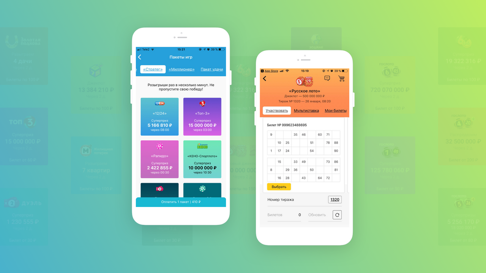

Мобильное приложение Столото
Гипермаркет лотерей для монополиста игрового бизнеса в России.
Перезапуск
Мобильное приложение Столото досталось нам от предыдущего подрядчика, который уже успел наломать дров. За первый год, нам нужно было привести код в порядок, улучшить существующие функции, заодно добавив несколько новых.
Лотереи
Лотереи — это смысл всего мобильного приложения Столото. Их много и все они разные: комбинаторные, предпринтовые игры. Сейчас в приложении больше 30 лотерей и у каждой своя логика, набор элементов, правила и способы отрисовки. Поэтому все лотереи в Столото создаются отдельно — приходится тщательно изучать правила и задавать условия.


Логин
Мы полностью изменили авторизацию и регистрацию в приложении. Раньше нужно было вводить много данных, а теперь достаточно номера телефона. Также при первом логине, пользователю покажут подробный тур по приложению, чтобы он разобрался в интерфейсе.


Пакеты лотерей
Для особо азартных игроков существуют пакеты лотерей, где билеты на игры продаются со скидками. Пакеты можно дарить другим пользователям, так что если хочется купить другу подарок, но тратить несколько тысяч не вариант, Столото может помочь.


Проверка билетов
Заветный экран, где решается судьба и задается настроение на последующие дни. Пан или пропал? Чтобы узнать, достаточно выбрать лотерею, тираж и номер билета. Если вводить неудобно, то можно просканировать QR-код.
Поддержка
Не знаете как получить выигрыш? Хотите узнать можно ли выиграть в лотереях? Поддержка Столото поможет вам разобраться с проблемой. Мы сделали полностью нативный чат куда помимо сообщений можно отправлять гифки и фото.
Где купить?
Мы добавили раздел с картой мира, где показываются все магазины Столото по всей России: с адресом, временем работы и расстоянием до вашего местоположения. Вдруг вы поедете в Брест и не сможете найти единственную точку продаж в городе.
Развитие проекта
Первое по плану — внедрить A/B тесты. Мы хотим собирать статистику и понимать поведение пользователей, чтобы развивать проект. Кроме того, в планах полноценный редизайн web-view разделов приложения.

Меня зовут Дмитрий Хайретдинов, я один из соучредителей в FINCH. Пишите мне, если хотите обсудить проект. Мы умеем работать с банками, футбольными клубами, телеканалами — любыми компаниями, которые хотят работать с большим количеством аудитории.